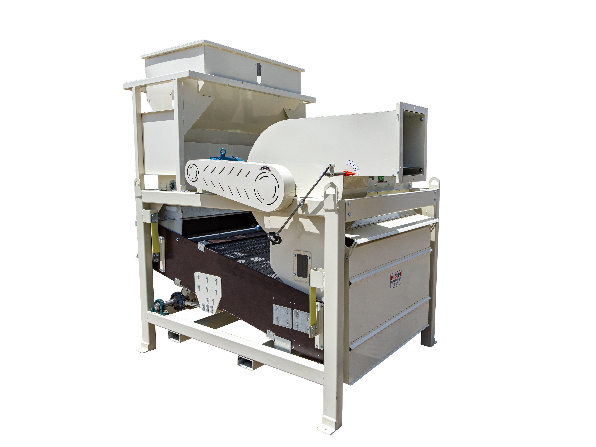

Frontier 34-3
Cribadora de precisión para limpieza de semilla y grano.
3 t/h · 3 cribas · 34×34"
Ver Frontier 34-3Equipos para limpieza de semillas y granos
MFroes fabrica cribadoras de semillas y granos para productores, procesadores de semilla y plantas comerciales. Nuestros equipos combinan cribas intercambiables y aspiración para separar impurezas y clasificar producto con precisión.
Cribadora de precisión para limpieza de semilla y grano.
3 t/h · 3 cribas · 34×34"
Ver Frontier 34-3
Cribadora de precisión para limpieza de semilla y grano.
5.2 t/h · 2 cribas · 54×60"
Ver Seed Master GV254
Cribadora de precisión para limpieza de semilla y grano.
6 t/h · 5 cribas · 54×26"
Ver Seed Master GV260
Cribadora de precisión para limpieza de semilla y grano.
10 t/h · 8 cribas · 54×26"
Ver GenX 8026


Cribadora de precisión para limpieza de semilla y grano.
30 t/h · 14 cribas · 54×44"
Ver C788 HighcapComparta el cultivo, capacidad requerida y material que necesita retirar. Le ayudamos a seleccionar el equipo y las cribas adecuadas.
Solicitar Cotización